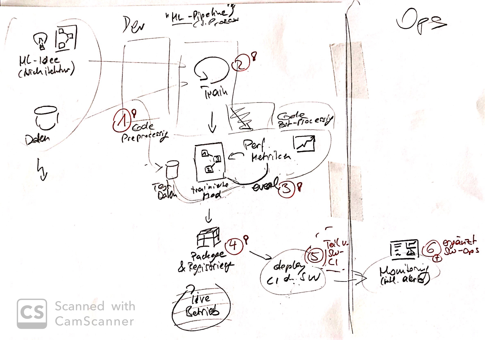
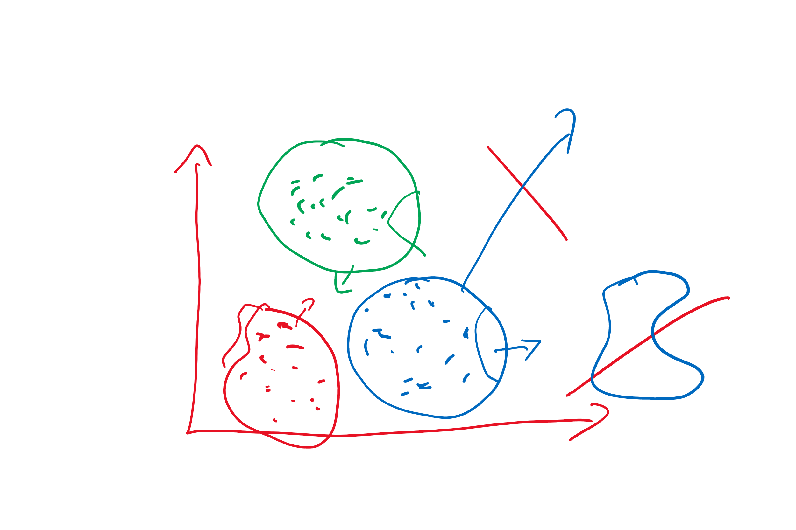

- als PDF mit Download link - bit.ly Link
Data Scientists vs Developers?
Ziel - Leuten aus der Seele sprechen - Probleme aufzeigen Warum schreiben wir Code? Was sind Randbedingungen dafür? Mindsets - DS: Hypothesen aufstellen und valideren - Dev: Qualität der Software (es gut machen)
### Abspecken angesagt? Dicke Torwärte halten weniger Bälle
### Üble Nachrede Keine Daten Gehacke Schwache Aussagen
## Versus
### Developers _Machine Learning Projekt? Dann setze ich schonmal den Kubernetes Cluster auf!_
<img src='img/classic-development.jpg'>
<img src='img/supervised-ml.jpg' height="650px">
### Was macht DS aus QUelle: https://youtu.be/FsSrzmRawUg Ganze Playlist dazu: https://www.youtube.com/playlist?list=PLMrJAkhIeNNQV7wi9r7Kut8liLFMWQOXn
Devs wissen nicht was sie tun und Data Scientists kommen nicht zu Potte
### Intro * Wer ist DS, Hand heben? * Wer Dev?
Dieser Bereich: https://ades-framework.netlify.app/ades-framework/empirical-process-control/ ist für eine Arbeit im Bereich ML notwendig und Beschreibt ziemlich gut auch das Vorgehen bei ML Projekten. D.h. ein Unternehmen, das ML machen will, muss in diesem Bereich stark sein. Im Text wird von Hypothesen gesprochen, die validiert werden sollten, aber nicht wie das gehen soll. Ist in der Tat nicht trivial, und deutet auf einen wissenschaftlichen Ansatz mit seinen eigenen Komplexitäten hin. Also, entweder klären wie die Validerung gehen soll oder weg lassen? https://ades-framework.netlify.app/ades-framework/empirical-process-control/
### Intro * Wer ist DS, Hand heben? * Wer Dev?
### Vorurteile am Anfang * Code von Data Scientist ist wirrer Wahnsinn * Welche Dev glaubt das? (seid ehrlich) * Devs sind Prinzipien-Reiter * Welche DS glaubt das? (seid ehrlich) * Alles dauert ewig * Welche DS glaubt das? (seid ehrlich)
### Überblick
### Überblick 2
### DS vs Dev * Was ist eine Version? * Kopie eines Notebooks * Artefakt in github * Wie geht Code-Reuse * Copy-Paste * Lib * Was ist guter Code? * anpassbar an viele Beispiele, macht tolle Sachen * Wartbar, Korrekt
### Von Exploration zur Production 1. DS Notebooks aufräumen 1. Quatsch raus 1. Thematisch aufteilen in mehrere Notebooks falls sinnvoll 1. Auskommentierung als if-then soll raus 1. Minimale Version Wenn DS und Dev dasselbe Programmiersprache/Framework teilen 1. DS und Dev zusammen 1. Was ist nicht spezifisch für das Notebook? Auslagern 1. Diese neuen Notebooks sind nun die Basis für die nächste Iteration 1. Wenn man die lib anders braucht, nicht direkt daran ändern, entkoppeln durch Copy-Paste
### Maschinelles Lernen vs. Software-Entwicklung _ML_ * POC & Forschung * Experimentieren * Hohes Risiko, hohe Belohnung _Software-Entwicklung_ * Langlebige Produkte * Instandhaltung * Zuverlässigkeit
### Wie gehen Software-Projekte im allgemeinen?
### Architektur-Arbeit bei ML-Projekten * häufig bekommt bei Software-Architektur der Implementierungsteil unterschätzt * bei ML ist es der der Vision * häufig kann eine Vision nicht oder nur angepasst umgesetzt werden * dies ist Teil der Architektur-Arbeit
### Anatomie von ML-Projekten
<small> https://www.slideshare.net/mikiobraun/bringing-ml-to-production-what-is-missing-amld-2020 </small>
<small> https://www.slideshare.net/mikiobraun/bringing-ml-to-production-what-is-missing-amld-2020 </small>
# Process, Roles, and Mindset
<small> https://www.slideshare.net/mikiobraun/bringing-ml-to-production-what-is-missing-amld-2020 </small>
<small> https://www.slideshare.net/mikiobraun/bringing-ml-to-production-what-is-missing-amld-2020 </small>
<small> https://www.slideshare.net/mikiobraun/bringing-ml-to-production-what-is-missing-amld-2020 </small>
<small> https://www.slideshare.net/mikiobraun/bringing-ml-to-production-what-is-missing-amld-2020 </small>
# ML-Ops and Production
<small> https://www.slideshare.net/mikiobraun/bringing-ml-to-production-what-is-missing-amld-2020 </small>
# Integration
<small> https://www.slideshare.net/mikiobraun/bringing-ml-to-production-what-is-missing-amld-2020 </small>
### Machine Learning in Projects * Data Science and Machine Learning can be experiments that fail often * Success of experiment can be precondition to starting a software project * ML experiment work rather feels like PO work * Some ML work rather is engineering, though * Can be part of an agile team
### Agile Machine Learning Projects? _ML projects have uncertainty over both timeframe and outcomes_ approaches 1. control - “distributional” approach to project management - assign priors and utilities to various outcomes 1. agile - work in very short time-boxed iterations 1 day to 1 week - at the end of iteration present results - be honest and open about them - decide if it makes sense to enter next time box <small> <br> https://twitter.com/dennybritz/status/1090139019973775360 <br> https://twitter.com/l2k/status/1089988137424629760 </small>
### What does this mean for you? If you want to adopt Machine Learning in your Company * Success can not guaranteed * Rather experiment within time boxes * Expect and clearly communicate failures * Bring models into production as quickly as possible * Do not optimize for the last few percentages * Quality of the data matters more than your approach
# ML-Ops and Production
### Development Cycle * Dev vs Prod * different for three main types of ML
### ML needs to solve challenges for production <img src='img/ng-process.jpg' height="500"> <small> https://twitter.com/AndrewYNg/status/1080886439380869122 </small>
### What’s your ML Test Score? A rubric for ML production systems <small> https://static.googleusercontent.com/media/research.google.com/en//pubs/archive/45742.pdf </small> Präsentiert auf der NIPS 2016 https://nips.cc/Conferences/2016/Schedule?showEvent=6255
### When is it ready for production? Question for machine learning people in industry: what does it mean for your work to be “in production” what qualifies your models to be “production ready”? See this a lot and I think the meanings change across different domains pretty quickly. Denny Britz (@dennybritz) tweeted at 6:37 AM on Tue, Mar 03, 2020: 1. Callable via API, and ideally with high throughput / low latency (SLA) 2. Metrics are monitored. This includes input distribution shift, feature distributions, output distributions, etc 3. Versioning (https://twitter.com/dennybritz/status/1234714538454335488?s=03) https://research.google/pubs/pub46555/
### ML-Ops  <small> * https://en.m.wikipedia.org/wiki/MLOps * https://github.com/microsoft/MLOps/blob/master/README.md * https://aws.amazon.com/sagemaker/ </small>
### Stability 
# Integration
### How to integrate into existing software? _Challenge_ * Machine Learning Models are often trained in Python * Need a Python Server or other specialized servers * Sometimes even need a GPU to perform properly _Measures_ * Use dedicated server and REST calls * REST overhead for fine grained calls too much overhead: consider custom implementations in host language
### Documentation * Since the model is developed using iterations each experiment and new direction needs to be documented properly * code alone can only tell a fraction of the story (ie. who, what, when — never WHY)
### Typical Quality Attributes for ML ML specific * Interpretability / Explainability * Accuracy of prediction, what is adequate accuracy (AA) for MVP * could influence safety when AA is lacking * freedom from unwanted bias * Stability of results (when retraining on same data / additional data / when model changes) Traditional * Data Protection (model must not allow getting out original data) * UX, new ways of including ML into UI to improve UX * Speed of prediction / training * Scalability of prediction / training (GPUs don't scale well, some algorithms do not scale well) * Security * where can we host the model? Public facing? API Gateway in between? What could an attacker do? * against influencing prediction
### Which parts of your code can you replace with Machine Learning? * the problem at hand is hard to specify * solving the problem can tolerate some error or uncertainty * you have sample data with labels (ground truth) or can simulate your environment * there is a clear, simple input and output
### Accuracy is king for applications of Machine Learning * applications have vastly different requirements on adequate accuracy (AA) * 60% or 70% of accuracy are not good or bad values or by themselves * only very few with more than 85% accuracy at http://scaledml.org/2020/ Recommendation * either find out what you can do with a given AA * or see if there is a way to get to the AA you need for a specific application
### Be clear about which level of explainability you need * probably has an impact on what kind of ML you can use (or no ML at all) * Neural Networks typically are black boxes, but very powerful * Decision Trees (especially when shallow) can be understood, but are often not as powerful * This might turn out to be a compromise between adequate accuracy and explainability
### Advice: Clarify Quality Goals Successful companies have very clear statements * Amazon * Netflix * Spotify
### Choosing an Approach From high to low * Degree of freedom * Knowledge needed * Effort needed Implementation * from scratch using all purpose language or CUDA on GPU * Low Level Neural Networks with Backpropagation using custom training loop, layer definitions and loss functions, e.g. TensorFlow, Pytorch * High Level Neural Networks using declarative API (e.g. Keras) * High Level Implementation * using classic Machine Learning libraries like Scikit-Learn or * predefined NN Architectures (like MobilNet or 3 Level Fully Connected) HOSTED SERVICES START HERE * Generic, pre-trained models, like Image-Net or Bert models * allow to be re-trained and adapted to your domain * trained and maintained by other people, remain generic
## Traditional Development and Machine Learning melt into one
### Role Model: Tesla https://www.youtube.com/playlist?list=PLRM2gQVaW_wVM4FBALoM7Wydb6n9NOiJ0 https://youtu.be/hx7BXih7zx8
### From Software 1.0 to 2.0 Composition * One system having many prediction heads and many inputs * Large number of small ML systems connected by conventional software Scope of ML / What part of the solution is covered by ML 1. End-To-End: ML imitates what people do more or less directly, like clicking buttons, emulate impulses for steering wheel / pedals (Imitation Learning, Behavioral Cloning) 1. Example car: inputs (video camera, radar) wired to wheels , pedals 2. Mediated Perception: Conventional Software uses inputs from 1-n ML systems and uses them in processes that are not data driven, but done by deliberate programming 1. Multiple sensors deliver tracking data, predictions, etc. classic software makes decision like below
## Migrating from Software 1.0 (Classic Code) to 2.0 (Machine Learning)  Andrej Karpathy (https://twitter.com/karpathy) at http://scaledml.org/2020/
### Machine Learning vs Software Development _ML_ * POC & Research * Experimentation * High Risk, High Reward _Software Development_ * Long Living Products * Maintenance * Reliability
### Machine Learning in Projects * Data Science and Machine Learning can be experiments that fail often * Success of experiment can be precondition to starting a software project * ML experiment work rather feels like PO work * Some ML work rather is engineering, though * Can be part of an agile team
### Agile Machine Learning Projects? _ML projects have uncertainty over both timeframe and outcomes_ approaches 1. control - “distributional” approach to project management - assign priors and utilities to various outcomes 1. agile - work in very short time-boxed iterations 1 day to 1 week - at the end of iteration present results - be honest and open about them - decide if it makes sense to enter next time box <small> <br> https://twitter.com/dennybritz/status/1090139019973775360 <br> https://twitter.com/l2k/status/1089988137424629760 </small>
### What does this mean for you? If you want to adopt Machine Learning in your Company * Success can not guaranteed * Rather experiment within time boxes * Expect and clearly communicate failures * Bring models into production as quickly as possible * Do not optimize for the last few percentages * Quality of the data matters more than your approach